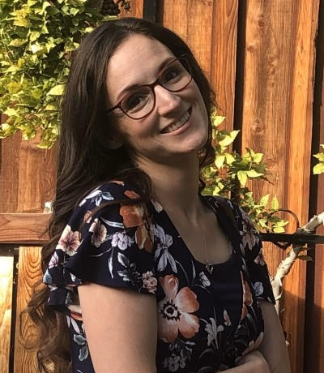

Jacquelyn Kulmus | WDD 130
Hello! My name is Jacquelyn Kulmus and I am from Richland, Washington. I am a mom of 3 awesome kids. My husband and I will be celebrating our 17 year anniversary in November. I am currently serving as an advisory to the oldest Young Womans group in my ward. I love music, coloring, crafting, and pretty much all outdoor activities. Hiking through Bryce Canyon, Utah is one of my favorite places on earth. I find beauty and peace in nature.